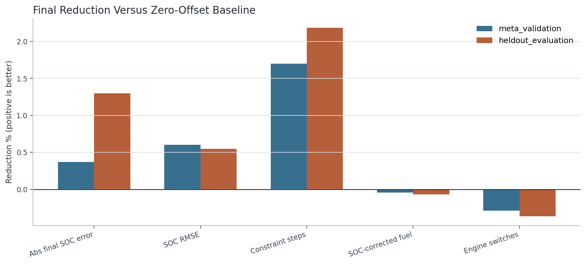
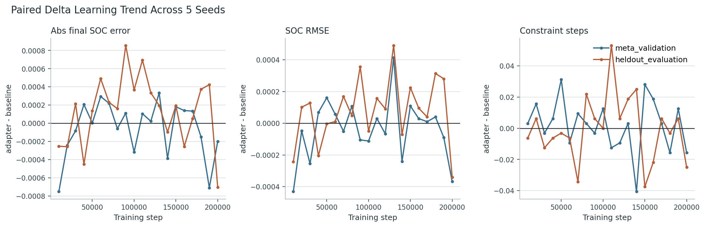
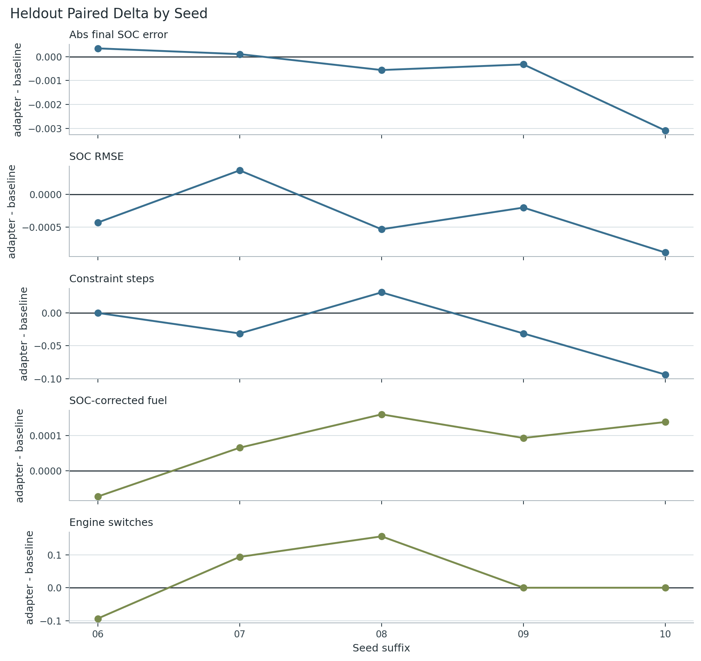
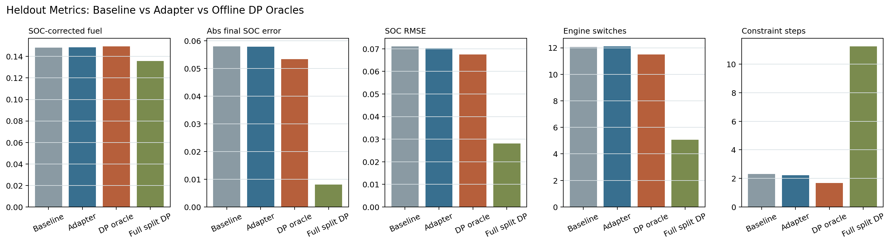
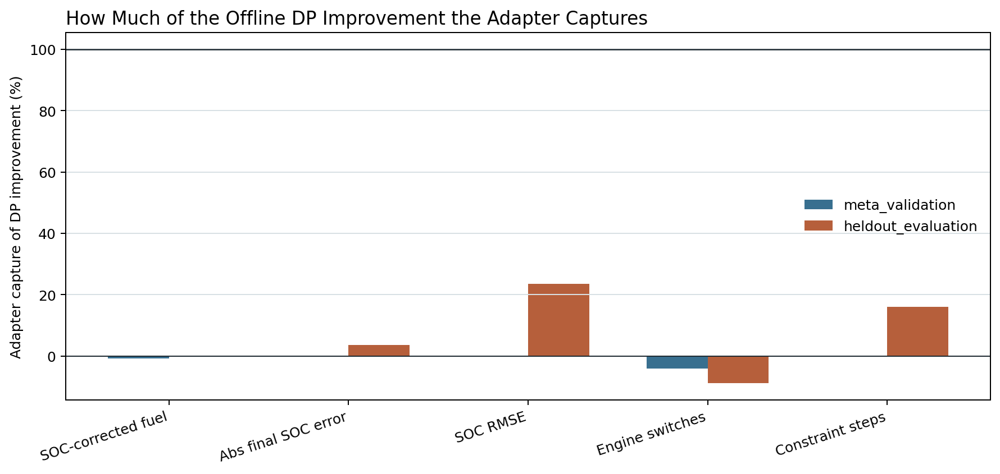
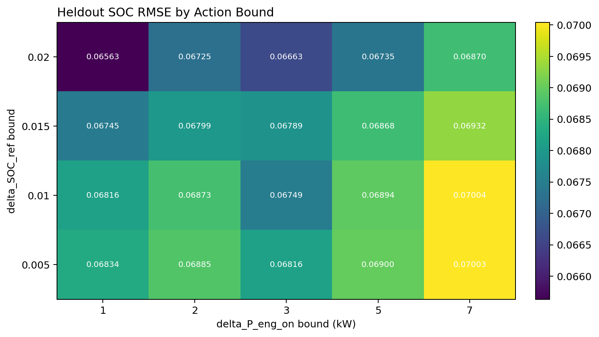
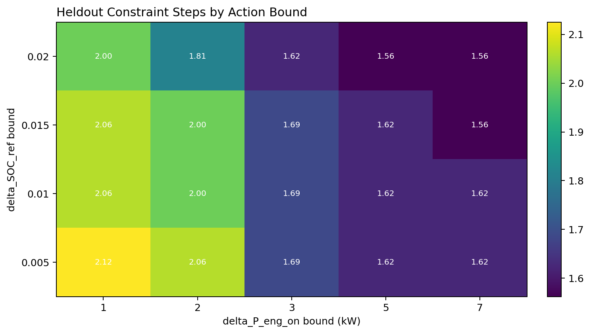
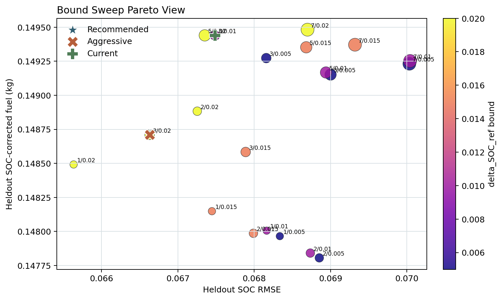
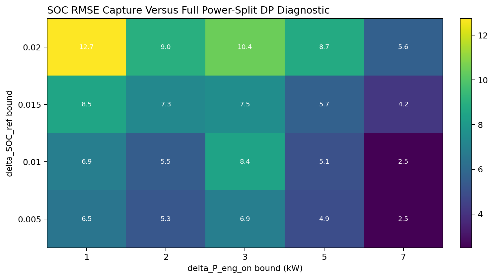

Meta-RL 학습 결과 상세 분석 보고서
5-seed paper-scale 학습은 안정적으로 완료되었고, heldout driving condition에서 SOC regulation과 constraint robustness 지표가 모두 개선 방향으로 움직였다. 다만 개선 폭은 작아서 현재 결과만으로는 강한 논문 claim의 정량 목표를 충족했다고 보기는 어렵다.
1. 실험을 어떻게 읽어야 하는가
Baseline은 기존 map/rule EMS에 zero offset을 넣은 정책이고, Adapter는 Meta-RL latent SAC adapter가 제한된 calibration offset만 조정한 정책이다. 이 결과는 black-box RL 제어기가 아니라 production-like EMS 위에 얹는 bounded calibration adapter의 효과를 보는 실험이다.
Map/rule EMS -> engine state, EMS mode, power split, final commands
2. 핵심 수치 요약: heldout evaluation
| 지표 | Baseline | Adapter | 변화율 | 해석 |
|---|---|---|---|---|
| 최종 SOC 오차에피소드 종료 시 목표 SOC에서 얼마나 벗어났는지 본다. 낮을수록 SOC regulation이 좋다. | 0.054238 | 0.053534 | 1.30% | 목표 미달 논문용 강한 목표: 20% 감소 |
| 주행 중 SOC RMSE전체 주행 동안 SOC 궤적이 목표 주변에 얼마나 잘 머물렀는지 본다. 낮을수록 좋다. | 0.062284 | 0.061945 | 0.55% | 목표 미달 논문용 강한 목표: 10% 감소 |
| 제약 위반 step 수SOC/전력 등 단순화된 제약을 벗어난 step 수다. 낮을수록 constraint robustness가 좋다. | 1.143750 | 1.118750 | 2.19% | 목표 미달 논문용 강한 목표: 30% 감소 |
| SOC 보정 연료 사용량SOC 차이를 보정한 연료 사용량이다. 낮을수록 좋지만, 여기서는 guardrail로 사용한다. | 0.111858 | 0.111936 | -0.07% | guardrail 통과 guardrail: 악화 2% 이내 |
| 엔진 on/off 전환 횟수엔진 켜짐/꺼짐 전환 횟수다. 너무 늘면 drivability/NVH 관점에서 불리할 수 있어 guardrail로 본다. | 8.615625 | 8.646875 | -0.36% | guardrail 통과 guardrail: 증가 10% 이내 |
SOC 관련 주 지표는 모두 개선 방향이다. 최종 SOC 오차는 1.30%, SOC RMSE는 0.55%, 제약 위반 step은 2.19% 줄었다. 연료와 엔진 전환은 약간 악화되었지만 각각 guardrail 안에 있다.
3. 그림으로 보는 결과
그림 1. 최종 평균 변화율

그림 2. 학습 step에 따른 paired delta 추세

그림 3. Seed별 heldout delta

4. Validation split 확인
| 지표 | Baseline | Adapter | 변화율 |
|---|---|---|---|
| 최종 SOC 오차에피소드 종료 시 목표 SOC에서 얼마나 벗어났는지 본다. 낮을수록 SOC regulation이 좋다. | 0.054443 | 0.054242 | 0.37% |
| 주행 중 SOC RMSE전체 주행 동안 SOC 궤적이 목표 주변에 얼마나 잘 머물렀는지 본다. 낮을수록 좋다. | 0.060976 | 0.060608 | 0.60% |
| 제약 위반 step 수SOC/전력 등 단순화된 제약을 벗어난 step 수다. 낮을수록 constraint robustness가 좋다. | 0.918750 | 0.903125 | 1.70% |
| SOC 보정 연료 사용량SOC 차이를 보정한 연료 사용량이다. 낮을수록 좋지만, 여기서는 guardrail로 사용한다. | 0.111759 | 0.111807 | -0.04% |
| 엔진 on/off 전환 횟수엔진 켜짐/꺼짐 전환 횟수다. 너무 늘면 drivability/NVH 관점에서 불리할 수 있어 guardrail로 본다. | 10.881250 | 10.912500 | -0.29% |
Validation split에서도 heldout과 비슷하게 SOC/constraint 지표가 작게 개선되고 guardrail 악화는 작다. validation과 heldout이 완전히 반대 방향으로 갈라지지는 않았기 때문에, 최소한 overfit으로만 생긴 결과라고 보기는 어렵다.
5. Seed별 수치
| Seed | 최종 SOC 오차 delta | SOC RMSE delta | 제약 위반 delta | 연료 delta | 엔진 전환 delta |
|---|---|---|---|---|---|
| 20260706 | 0.000347 | -0.000433 | 0.000000 | -0.000073 | -0.093750 |
| 20260707 | 0.000106 | 0.000367 | -0.031250 | 0.000066 | 0.093750 |
| 20260708 | -0.000559 | -0.000536 | 0.031250 | 0.000161 | 0.156250 |
| 20260709 | -0.000324 | -0.000204 | -0.031250 | 0.000094 | 0.000000 |
| 20260710 | -0.003088 | -0.000893 | -0.093750 | 0.000139 | 0.000000 |
delta는 adapter - baseline이다. SOC 오차, SOC RMSE, 제약 위반 step에서는 음수가 좋다. 연료와 엔진 전환도 음수가 좋지만, 이 둘은 주 목표가 아니라 guardrail로 본다.
6. 논문 claim 관점의 판단
사용자가 정한 claim은 production-like EMS의 task-aware calibration adapter가 unseen driving condition에서 SOC regulation과 constraint robustness를 개선한다는 것이다. 현재 결과는 방향성은 지지한다. heldout에서 세 primary metric이 모두 개선 방향이고, 연료/엔진 전환 guardrail도 통과했기 때문이다.
하지만 강한 claim을 쓰려면 정량 효과가 더 커야 한다. 현재 성공 기준은 SOC RMSE 10% 감소, 최종 SOC 오차 20% 감소, 제약 위반 30% 감소인데, 실제 결과는 각각 0.55%, 1.30%, 2.19%다.
추천 표현: The proposed task-aware calibration adapter yields small but consistent heldout improvements in SOC regulation and constraint-related metrics while staying within fuel and engine-switching guardrails.
7. 왜 개선 폭이 작게 나왔는가
- Baseline map/rule EMS가 이미 꽤 강하다. zero-offset 정책이 크게 망가지지 않으면 adapter가 얻을 수 있는 절대 이득이 작다.
- Adapter action이 bounded calibration offset으로 제한되어 있다. production-like 안전성에는 좋지만, 성능 향상 폭은 직접 power split을 제어하는 black-box RL보다 작을 수 있다.
- 현재 task/reward가 adapter에게 언제 개입해야 하는지를 충분히 날카롭게 알려주지 못했을 수 있다. constraint robustness를 크게 개선하려면 높은 요구 파워, SOC drift, 반복 stop-go 같은 상황에서 offset의 이득이 더 분명히 드러나야 한다.
8. 다음 실험 제안
- Reward에서 제약 위반과 terminal SOC drift가 나타나는 에피소드의 학습 신호를 더 강하게 만든다.
- Heldout split에 adapter가 실제로 개입할 여지가 큰 profile을 별도로 구성한다.
delta_SOC_ref와delta_P_eng_on의 사용량 분포를 분석해서 adapter가 거의 zero-offset 근처에 머무는지 확인한다.- Ablation은 main setting의 effect size를 키운 뒤 raw/history branch, summary branch, probabilistic encoder 순으로 비교하는 편이 낫다.
10. Bounded DP Oracle 비교
추가로 학습된 adapter를 discretized bounded-offset DP oracle과 비교했다. 이 oracle은 미래 주행 프로파일을 알고 있지만, Meta-RL과 동일하게 delta_P_eng_on, delta_SOC_ref 두 보정값만 선택한다.
엔진 on/off, EMS mode, engine/motor power split은 계속 기존 map/rule EMS가 결정한다. 따라서 이 비교는 차량 전체 파워분배를 직접 최적화한 full DP lower bound가 아니라, 같은 권한을 가진 calibration adapter의 offline upper bound다.
이번 대표 subset에서는 frontier cap hit가 없어 설정한 discretized state/action grid 안에서는 DP frontier가 모두 유지되었다.
추가 진단으로 discretized offline full power-split DP oracle도 계산했다. 이 oracle은 P_eng_target을 직접 선택하므로 Meta-RL adapter와 권한이 다르고, 미래 주행을 모두 아는 offline/non-deployable 기준이다. 이번 실행은 decision interval 10 s, constraint mode lexicographic 설정이다.
주의: full power-split DP는 heldout에서 SOC/fuel 지표를 크게 개선했지만, 제약 위반 step이 baseline 2.312에서 11.250로 증가했다. 따라서 이 값은 논문 claim의 공정 비교 기준이 아니라, 현재 direct power-split oracle 설계의 trade-off를 보여주는 진단 결과다.
| 지표 | Baseline | Adapter mean | Bounded DP oracle | Full split DP | Adapter capture |
|---|---|---|---|---|---|
| 최종 SOC 오차에피소드 종료 시 목표 SOC에서 얼마나 벗어났는지 본다. 낮을수록 SOC regulation이 좋다. | 0.058034 | 0.057867 | 0.053410 | 0.008048 | 3.62% |
| 주행 중 SOC RMSE전체 주행 동안 SOC 궤적이 목표 주변에 얼마나 잘 머물렀는지 본다. 낮을수록 좋다. | 0.071113 | 0.070261 | 0.067486 | 0.028120 | 23.47% |
| 제약 위반 step 수SOC/전력 등 단순화된 제약을 벗어난 step 수다. 낮을수록 constraint robustness가 좋다. | 2.312500 | 2.212500 | 1.687500 | 11.250000 | 16.00% |
| SOC 보정 연료 사용량SOC 차이를 보정한 연료 사용량이다. 낮을수록 좋지만, 여기서는 guardrail로 사용한다. | 0.148338 | 0.148412 | 0.149439 | 0.135827 | n/a |
| 엔진 on/off 전환 횟수엔진 켜짐/꺼짐 전환 횟수다. 너무 늘면 drivability/NVH 관점에서 불리할 수 있어 guardrail로 본다. | 12.062500 | 12.112500 | 11.500000 | 5.062500 | -8.89% |
그림 4. Baseline, Adapter, DP oracle 비교

그림 5. Adapter가 DP 개선 여지를 얼마나 회수했는가

11. Action Bound Sweep
이 섹션은 Meta-RL과 동일한 action 구조인 delta_P_eng_on, delta_SOC_ref의 적절한 bound를 실험적으로 고른다. DP는 full power split을 직접 고르지 않고, 같은 bounded-offset authority 안에서만 미래 정보를 사용하는 diagnostic upper bound로 계산했다.
Full power-split DP에서 bound를 직접 역산하지 않는 이유는 권한이 다르기 때문이다. Full DP는 power split을 직접 선택하므로 그 결과를 calibration offset으로 inverse하면 map/rule EMS의 hysteresis, minimum timer, limiter, charge branch를 우회한 권한을 calibration bound로 착각하게 된다.
The action bounds were selected through a bounded-offset DP sweep under the same calibration-adapter authority, using full power-split DP only as an offline diagnostic reference.
| Bound | SOC RMSE | Abs final SOC err | Constraint steps | SOC-corr fuel | Engine switches | Feasible | Selection |
|---|---|---|---|---|---|---|---|
| ±1.000 kW / ±0.0050 SOC | 0.068335 | 0.057645 | 2.125000 | 0.147966 | 11.750000 | no | |
| ±1.000 kW / ±0.0100 SOC | 0.068163 | 0.057100 | 2.062500 | 0.148006 | 11.750000 | no | |
| ±1.000 kW / ±0.0150 SOC | 0.067446 | 0.055043 | 2.062500 | 0.148149 | 11.750000 | no | |
| ±1.000 kW / ±0.0200 SOC | 0.065633 | 0.049311 | 2.000000 | 0.148492 | 11.750000 | no | |
| ±2.000 kW / ±0.0050 SOC | 0.068853 | 0.056822 | 2.062500 | 0.147806 | 11.500000 | no | |
| ±2.000 kW / ±0.0100 SOC | 0.068735 | 0.056278 | 2.000000 | 0.147841 | 11.500000 | no | |
| ±2.000 kW / ±0.0150 SOC | 0.067989 | 0.055873 | 2.000000 | 0.147987 | 11.500000 | no | |
| ±2.000 kW / ±0.0200 SOC | 0.067254 | 0.053878 | 1.812500 | 0.148883 | 11.375000 | no | |
| ±3.000 kW / ±0.0050 SOC | 0.068157 | 0.054554 | 1.687500 | 0.149273 | 11.375000 | yes | |
| ±3.000 kW / ±0.0100 SOC | 0.067486 | 0.053410 | 1.687500 | 0.149439 | 11.500000 | yes | |
| ±3.000 kW / ±0.0150 SOC | 0.067888 | 0.052260 | 1.687500 | 0.148584 | 11.250000 | yes | |
| ±3.000 kW / ±0.0200 SOC | 0.066629 | 0.050293 | 1.625000 | 0.148710 | 11.250000 | yes | recommended;aggressive |
| ±5.000 kW / ±0.0050 SOC | 0.069000 | 0.054640 | 1.625000 | 0.149152 | 11.250000 | yes | |
| ±5.000 kW / ±0.0100 SOC | 0.068940 | 0.054166 | 1.625000 | 0.149167 | 11.250000 | yes | |
| ±5.000 kW / ±0.0150 SOC | 0.068681 | 0.052551 | 1.625000 | 0.149352 | 11.250000 | yes | |
| ±5.000 kW / ±0.0200 SOC | 0.067352 | 0.051108 | 1.562500 | 0.149440 | 11.250000 | yes | |
| ±7.000 kW / ±0.0050 SOC | 0.070033 | 0.054407 | 1.625000 | 0.149232 | 11.250000 | yes | |
| ±7.000 kW / ±0.0100 SOC | 0.070042 | 0.054027 | 1.625000 | 0.149252 | 11.250000 | yes | |
| ±7.000 kW / ±0.0150 SOC | 0.069320 | 0.052689 | 1.562500 | 0.149371 | 11.250000 | yes | |
| ±7.000 kW / ±0.0200 SOC | 0.068698 | 0.050940 | 1.562500 | 0.149482 | 11.250000 | yes |
그림 7. Heldout SOC RMSE heatmap

그림 8. Heldout constraint heatmap

그림 9. Pareto/elbow selection

그림 10. Gap to full power-split DP diagnostic

12. 최종 판정
현재 full run은 실패가 아니라 안정적인 1차 결과다. 학습 안정화는 성공했고, heldout 평균은 원하는 방향으로 움직였으며, guardrail도 지켰다. 다만 논문 메인 결과로 쓰기에는 개선 폭이 작다. 다음 목표는 알고리즘을 더 복잡하게 만드는 것보다, adapter가 유의미하게 개입할 수 있는 task/reward/evaluation setting을 선명하게 만드는 것이다.